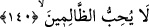

140. Eğer siz (Uhud’da) bir acıya uğradınızsa, (Bedir’de de düşmanınız olan) o
kavim de benzer bir acıya uğramıştır. O günleri biz insanlar arasında döndürür
dururuz (zaferi bazen bir topluma bazen öteki topluma nasip ederiz.) Ta ki Allah,
îman edenleri ortaya çıkarsın ve aranızdan şahidler edinsin. Allah zâlimleri
sevmez.
“Eğer size bir yara dokunduysa” isâbet ettiyse, “o topluluğa da” kâfirlere de
Bedir’de “benzeri bir yara dokunmuştu.”
Denildiğine göre: “Müslümanlar Bedir’de yetmiş kâfir öldürüp yetmiş kâfiri de esir
aldıkları gibi, kâfirler de Uhud’da müslümanlardan yetmiş kişiyi şehid edip yetmiş
kişiyi de esir almışlardı.”
Âyetin mânası: Onlar size karşı Uhud’da bir başarı kazandılarsa, siz de Uhud’dan
önce Bedir Savaşı’nda onlara karşı başarı kazanmıştınız. Ama bu başarınız onların
moralini bozmamış, sizinle savaşarak size düşmanlık etmekten geri bırakmamıştı. Zaaf
göstermemek, onlardan çok, size yakışır. Çünkü siz Allah’dan, onların ummayacağı
şeyleri bekliyorsunuz.
“Bu ikbâl günlerini” ifadesindeki “bu” sözü gelmiş ve gelecek bütün ümmetler
arasında yaşanan günlere işaret etmektedir. Yoksa, özellikle Bedir ve Uhud günlerini
kasdetmemektedir. Ama, bu iki savaş, “bu günler” kapsamına öncelikli olarak
girmektedirler. Fakat “bu günler”den maksat; bütün zafer ve galebe vakitleridir.
“İnsanlar arasında çevirip,” değiştirip “dururuz.” Bazen şunların eline, bazen da
bunların eline veririz. Şu şiirde olduğu gibi:
Bir gün lehimize, bir gün aleyhimize
Bir gün sevinir, bir gün üzülürüz.
“Müdâvele” bir şeyi birinden diğerine nakletmektir. Âyet-i kerîmedeki
“müdâvele”den maksat; Allah Teâlâ’nın, bazen mü’minlere; bazen de kâfirlere yardım
etmesi değildir. Çünkü Allah’ın yardımı çok şerefli olduğundan bu mansıbın kâfirlere
verilmesi uygun düşmez. Buradaki “müdâvele”den maksat, Allah Teâlâ’nın bazen
mü’minleri; bazen de kâfirleri şiddetli mihnet ve belâlara dûçâr etmesidir. Cenâb-ı Hak,
eğer daima kâfirlere şiddetli belâlar verip de mü’minlere hiçbir belâ vermeseydi, o
takdirde, îmandan başka tüm yolların bâtıl olup sadece îmanın hakikat olduğunu
gösteren zarûrî ve ıztırârî bir bilgi hâsıl olurdu. Dolayısıyla insanları mükellef tutma,
sevap ve ceza gibi kavramlar ortadan kalkardı.
Bu sebepledir ki, zihinlerdeki şüpheler devam etsin, insanlar da İslâm’ın hak
olduğunu gösteren delilleri düşünüp değerlendirerek bu şüpheleri kafalarından atsınlar;
buna karşılık da Rableri katında büyük sevaplar kazansınlar diye Cenâb-ı Hak Teâlâ